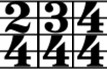

Takty a předznamenání
Takty
Nebo-li dvou/čtvrťový, tří/čtvrťový nebo čtyř/čtvrťový = c (celý)
Předznamenání
- # - křížek (zvyšuje notu o půl tónu)
- b - béčko (snižuje notu o půl tónu)
- ♮ - odrážka (ruší #, b)
Akcenty = důrazy
- < - zesilovat
- > - zeslabovat